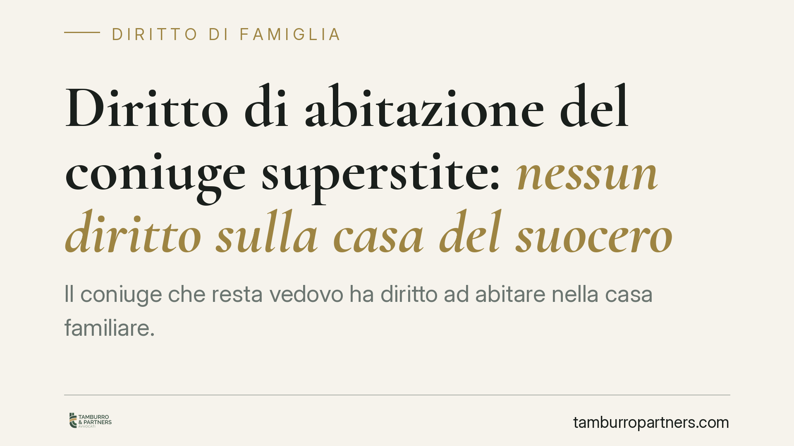

Diritto di abitazione del coniuge superstite: nessun diritto sulla casa del suocero
Il coniuge che resta vedovo ha diritto ad abitare nella casa familiare. Ma questo diritto vacilla quando l'immobile non apparteneva al defunto: se era del suocero o in comunione con un terzo, nessuna tutela. Lo ribadisce il Tribunale di Nola con la sentenza n. 2847/2026, in linea con la Cassazione. Un chiarimento che pesa per molte famiglie allargate.

Il caso
Una donna rimasta vedova chiede di continuare ad abitare nell'immobile dove viveva con il marito. L'ostacolo: la casa non apparteneva al coniuge defunto, bensì al suocero, oppure risultava in comunione tra il defunto e un soggetto terzo.
Il Tribunale di Nola, con la sentenza n. 2847/2026, nega il diritto di abitazione. E nega anche la sua conversione in una somma di denaro equivalente. La decisione si allinea alla Cassazione (ordinanza n. 29162/2021), consolidando un orientamento ormai stabile.
Inquadramento normativo
L'articolo 540, comma 2, del codice civile riconosce al coniuge superstite due diritti autonomi rispetto alla quota di eredità: il diritto di abitazione sulla casa adibita a residenza familiare e il diritto di uso sui mobili che la corredano. Si tratta di diritti cosiddetti "di prelegato", che gravano sull'asse ereditario a favore del coniuge.
Il presupposto, però, è preciso: i diritti sorgono solo se la casa e i mobili erano di proprietà del defunto o in comunione tra il defunto e il coniuge superstite. La norma presuppone cioè che l'immobile faccia parte del patrimonio ereditario. Se il bene appartiene a un terzo – come il suocero – non c'è alcun diritto da far valere, perché non rientra nell'eredità.
La Cassazione ha chiarito che questi diritti non possono gravare su beni estranei all'asse. Né è ammessa una tutela "per equivalente": il coniuge non può pretendere una somma di denaro al posto dell'abitazione negata. Dove manca il presupposto proprietario, manca ogni diritto, anche in forma monetizzata.
Cosa cambia per chi resta
L'impatto pratico colpisce soprattutto le famiglie in cui la casa è intestata ai genitori di uno dei coniugi. È una situazione frequente: i suoceri acquistano o mantengono la proprietà dell'immobile in cui la giovane coppia va a vivere. Alla morte del figlio o della figlia, il coniuge superstite si trova senza alcun titolo per restare.
In questi casi il coniuge vedovo non è equiparato a un erede del suocero. Finché il suocero è in vita, è lui il proprietario; alla sua morte, erediteranno i suoi legittimari (gli altri figli, eventualmente i nipoti per rappresentazione), non la nuora o il genero.
Lo stesso vale per la comproprietà con un terzo. Se il marito possedeva solo una quota dell'immobile insieme a un estraneo, il diritto di abitazione non può comprimere la posizione del comproprietario che nulla c'entra con la successione.
La conseguenza è netta: senza un titolo autonomo – un contratto di comodato, un usufrutto costituito per atto, una disposizione testamentaria – il coniuge superstite può essere tenuto a lasciare l'immobile.
Cosa fare in concreto
- Verificate l'intestazione dell'immobile dove vive la coppia: una visura catastale e i dati della conservatoria chiariscono chi è realmente il proprietario e con quali quote.
- Formalizzate un titolo quando la casa è dei suoceri: valutate un contratto di comodato scritto, la costituzione di un usufrutto o di un diritto di abitazione per atto notarile, così da non dipendere dall'art. 540 c.c.
- Considerate lo strumento testamentario: il proprietario (ad esempio il suocero) può disporre per testamento a favore della nuora o del genero, nei limiti della quota disponibile e senza ledere i legittimari.
- Non confidate nell'equivalente in denaro: la giurisprudenza lo esclude, quindi non è una via di uscita alternativa all'abitazione negata.
- Raccogliete per tempo la documentazione successoria in caso di lutto: titoli di proprietà, atti di provenienza, eventuali disposizioni del defunto. Consigliamo di muoversi prima che si apra un contenzioso con gli altri eredi.
La pianificazione preventiva resta la tutela più efficace. Costruire il titolo quando la coppia è ancora unita evita di scoprire, nel momento più difficile, di non avere alcun diritto sulla casa in cui si è sempre vissuto.
---
*Contributo informativo a cura di Tamburro & Partners - Avv. Giuseppe Tamburro. Non costituisce parere legale.*
Ogni famiglia ha il suo equilibrio.
Separazione, divorzio, affidamento, assegno: se vuoi un confronto riservato su una specifica situazione, scrivi allo studio. Ti rispondiamo entro un giorno lavorativo.